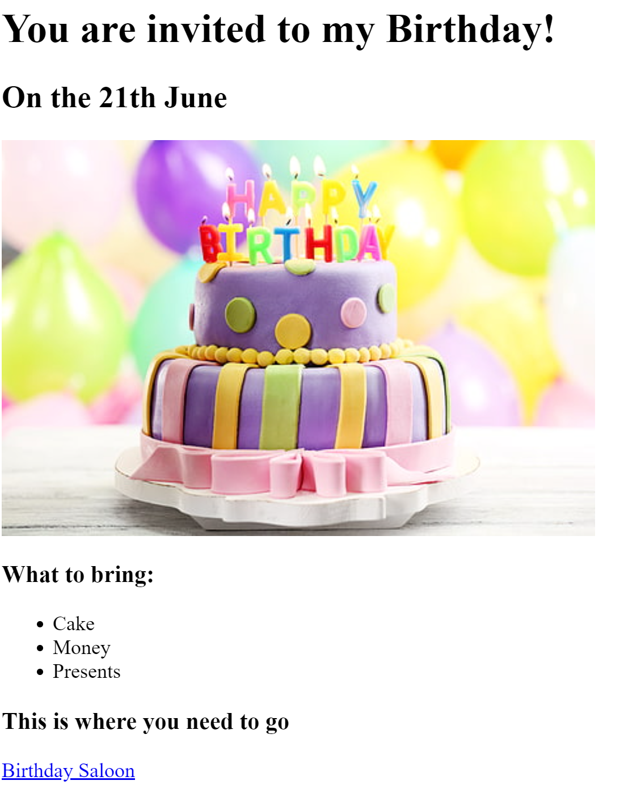
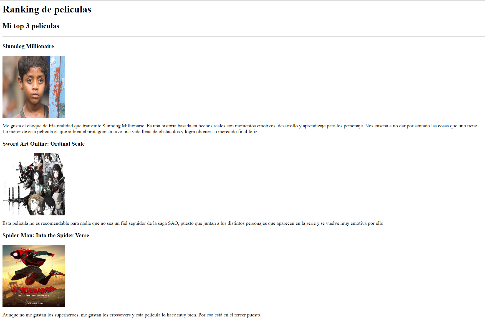

Wendy Masset's Portfolio
I'm a Web Developer
These are my last Projects:
Birthday Invite

Click here to see my Birthday Invite webpage
Movie Ranking

Click here to see my Movie Ranking webpage
About me
Contact me